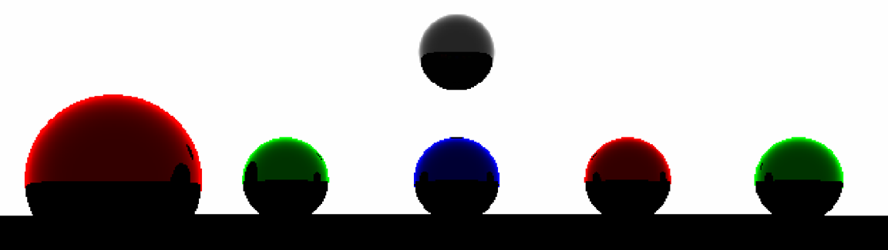
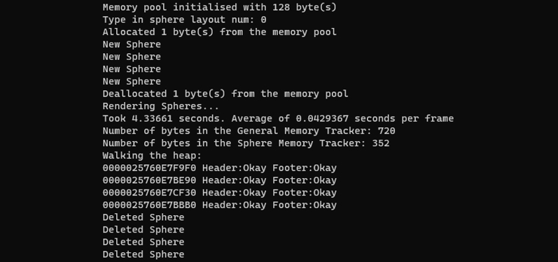

Low-Level Programming Project
For this project a software raytracing program was provided by the university which generated 100 frames of a scene involving spheres. The goal was to improve its efficiency while adding low-level memory management to it. The main way efficiency was improved was by using Visual Studio's monitoring tools to see where the CPU and memory are being used too much and redid those sections in a better way. Multithreading was also used to divide the rendering between threads.
For memory management the new and delete keywords were overwritten to add headers and footers to requested memory with checks in them to make sure the memory had not been overwritten. The program also walked the heap using the headers and footers as another way to check memory integrity. A memory pool was also added which initialises a set amount of memory when the application starts.
It was also runs differently on Linux where instead of using threads it makes use of Linux's child processes via forking.